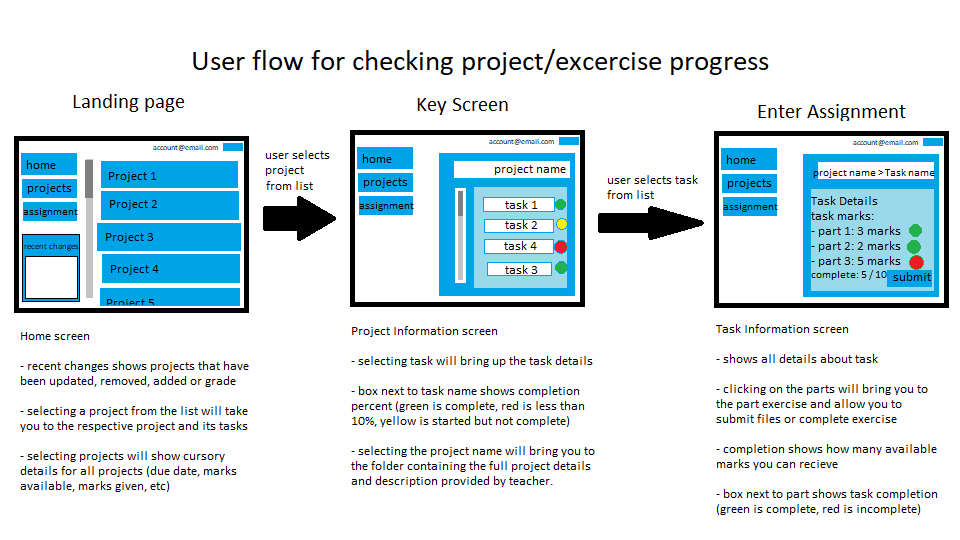
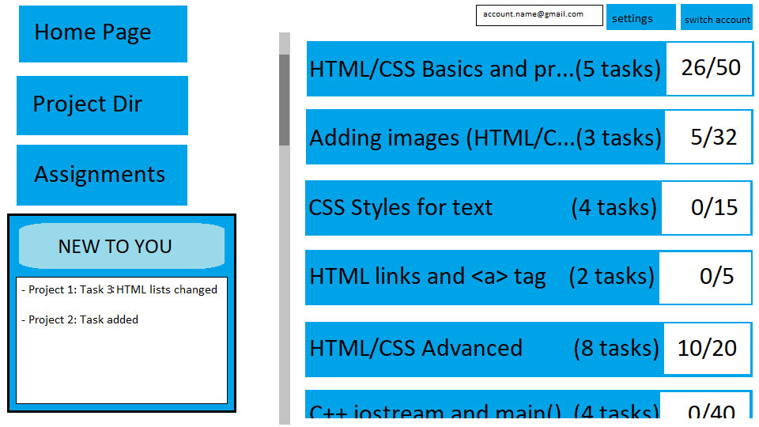
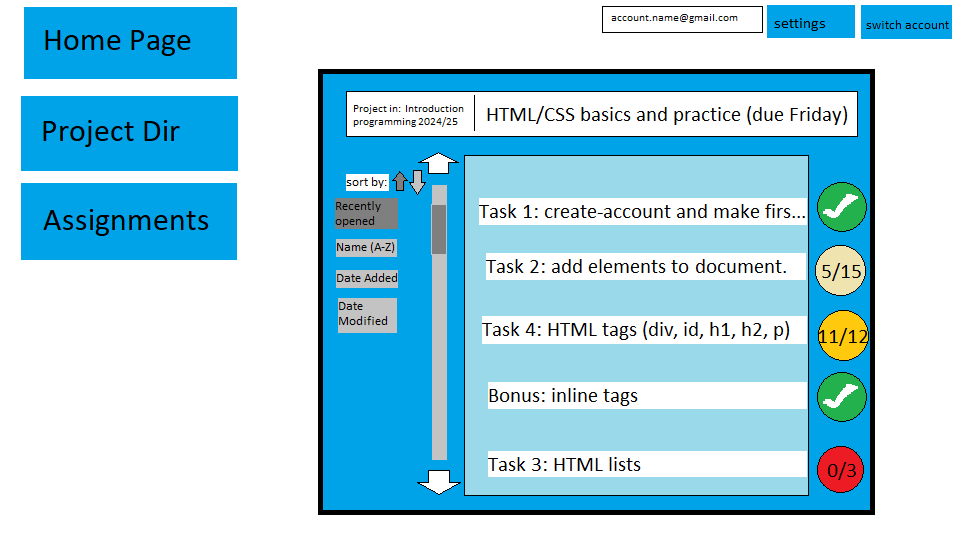
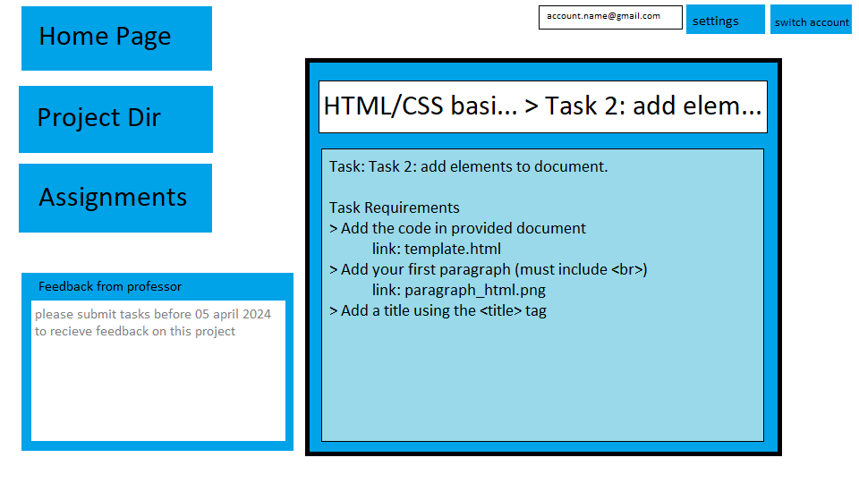
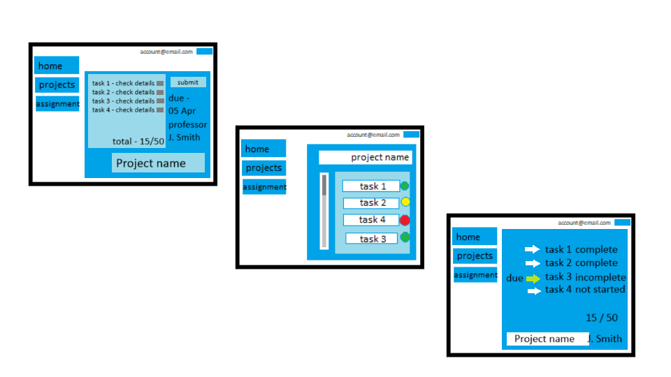

I am designing for the user to track their progress for individual project/exercise completion. Not their performance on said projects.

Landing page (Home screen)

Key Screen (Project Details)

End Screen(Task Details)

Alternate designs for key screens

Reviewed by Robert McGregor and Kacie Franklin